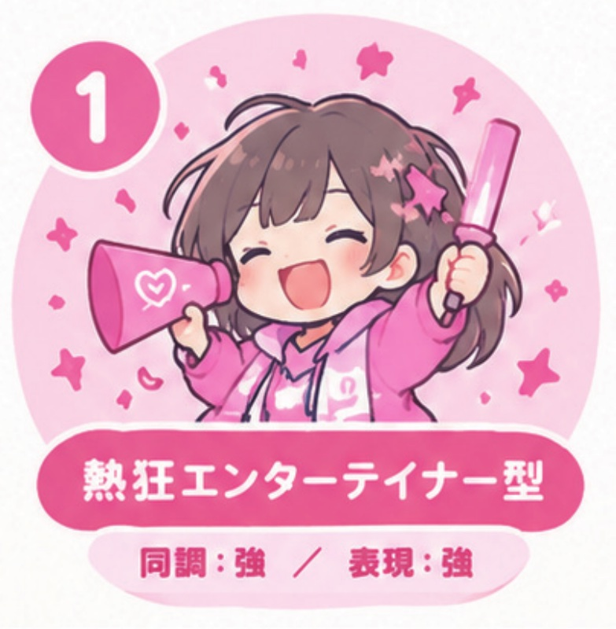
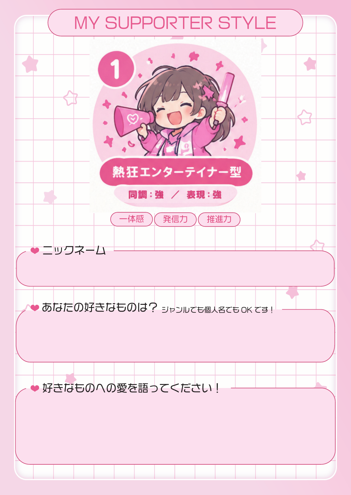

SUPPORTER STYLE CHECK
応援スタイル診断
好きなものがある人は、その対象を思い浮かべて！まだ好きなものが見つかっていない人は、未来の推しを応援する自分を想像してみましょう！
8つの質問から、あなたらしい応援のあり方を見つけます。
QUESTION 1 / 8
ABOUT YOU
まずは、あなたについて教えてください！
入力した内容は、この診断結果の画面だけに表示されます。
大切にしたいこと
応援で一番大事なのは、どちらに近い？
YOUR SUPPORTER STYLE

あなたの診断チャート
同調
表現
同調が強い
同調が弱い
表現が弱い
表現が強い

深く考えすぎず、今の気持ちに近い度合いを選んでください。